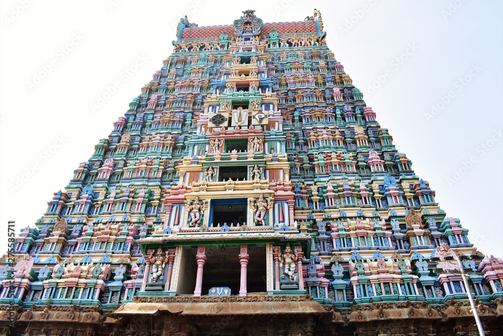

Kasi Viswanathar Temple in Tenkasi, a city in Tenkasi district in the South Indian state of Tamil Nadu, is dedicated to the Hindu god Shiva. Constructed in the Tamil style of architecture, the temple is believed to have been built by Pandyan ruler Parakrama Pandyan during the 13th century, with later additions from Madurai Nayaks. Shiva is worshipped as Kasi Viswanathar and his consort Parvathi as Ulagamman. A granite wall surrounds the temple, enclosing all its shrines. The temple is open from 6 am - 12 pm and 4 - 8:30 pm on all days except during new moon days when it is open the full day. Four daily rituals and three yearly festivals are held at the temple, of which the Maasi Maham festival during the Tamil month of Maasi (February - March) being the most prominent. The temple is maintained and administered by the Hindu Religious and Endowment Board of the Government of Tamil Nadu.
